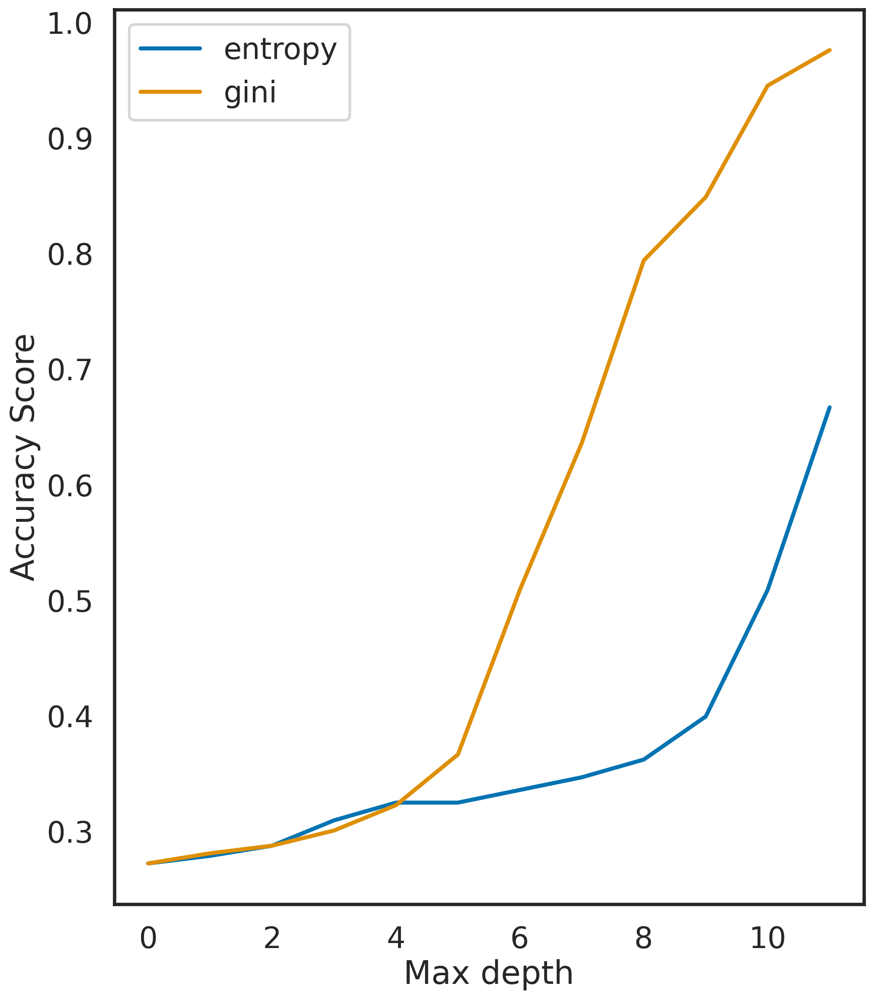

n1 = 118
n2 = 118
n3 = 118
n4 = 120
sigma = 0.1
data4 = rand_checkers(n1, n2, n3, n4, sigma)Travail Pratique 2 - ARBRES
On simule une réalisation d’un échantillon de taille 456 avec la fonction rand_checkers définie dans tp_arbres_source.py.
On crée deux objets : dt_entropy et dt_gini à partir de la fonction DecisionTreeClassifier du module tree qui nous servent à créer deux arbres de décision (selon le critère de l’entropie et selon le critère de gini pour le deuxième) à partir de nos observations data4.
dt_entropy = tree.DecisionTreeClassifier(criterion="entropy")
dt_gini = tree.DecisionTreeClassifier(criterion="gini")A partir de l’ensembe d’apprentissage data4, on nomme X_train les observation (qui sont des couples) et y_train leurs étiquettes.
data = data4
n_samples = len(data)
X_train = data4[:,0:2]
y_train = data4[:,2].astype(int)Pour i allant de 1 à 12, on calcule le pourcentage d’erreurs commises par les deux arbres dont la profondeur est fixée à i (le pourcentage d’erreurs est donné par le module score de la fonction DecisionTreeClassifier). On obtient ainsi le pourcentage d’erreur de chaque arbre en fonction de leur profondeur, on trace leurs courbes.
dmax = 12
scores_entropy = np.zeros(dmax) #vecteur qui contiendra les score des arbres entropy
scores_gini = np.zeros(dmax) #vecteur qui contiendra les score des arbres gini
plt.figure(figsize=(15, 10)) #formalité graphique
for i in range(dmax):
dt_entropy = tree.DecisionTreeClassifier(criterion="entropy", max_depth=i+1)
dt_entropy.fit(X_train, y_train)
scores_entropy[i] = dt_entropy.score(X_train, y_train)
dt_gini = tree.DecisionTreeClassifier(criterion="gini", max_depth=i+1)
dt_gini.fit(X_train, y_train)
scores_gini[i] = dt_gini.score(X_train, y_train)
plt.figure()
plt.plot(np.arange(dmax), scores_entropy, label="entropy")
plt.plot(np.arange(dmax), scores_gini, label="gini")
plt.xlabel('Max depth')
plt.ylabel('Accuracy Score')
plt.legend()
plt.draw()
print("Scores with entropy criterion: ", scores_entropy)
print("Scores with Gini criterion: ", scores_gini)Scores with entropy criterion: [0.27412281 0.29385965 0.32236842 0.39254386 0.53070175 0.625
0.82894737 0.92324561 0.95394737 0.96929825 0.98464912 0.99122807]
Scores with Gini criterion: [0.27412281 0.29385965 0.32894737 0.41666667 0.58552632 0.69517544
0.93859649 0.95175439 0.97807018 0.99342105 0.99780702 1. ]<Figure size 1440x960 with 0 Axes>